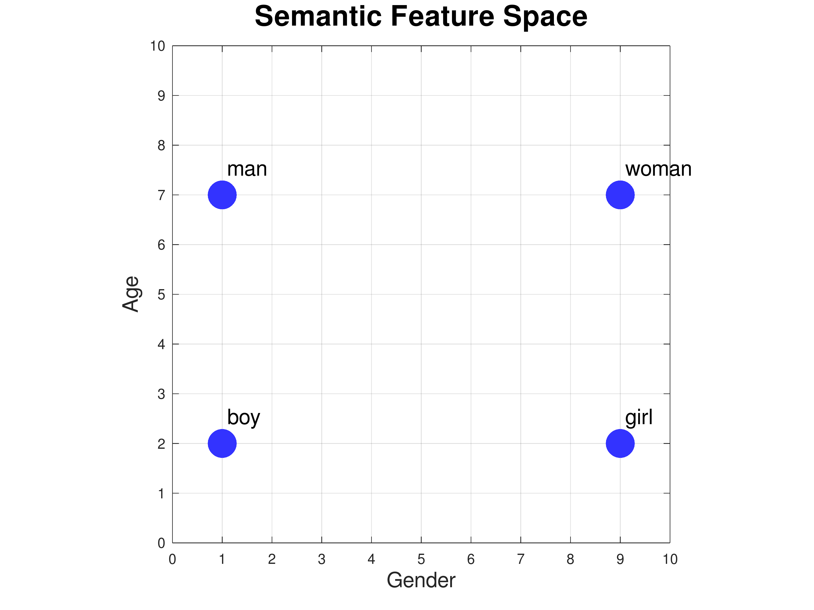
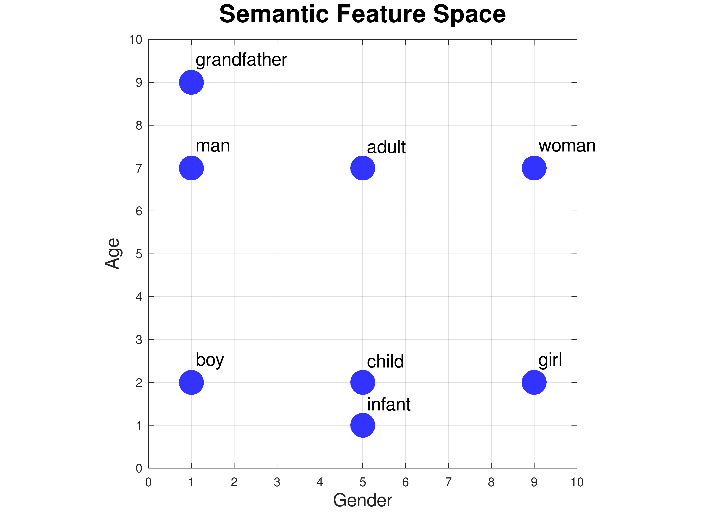
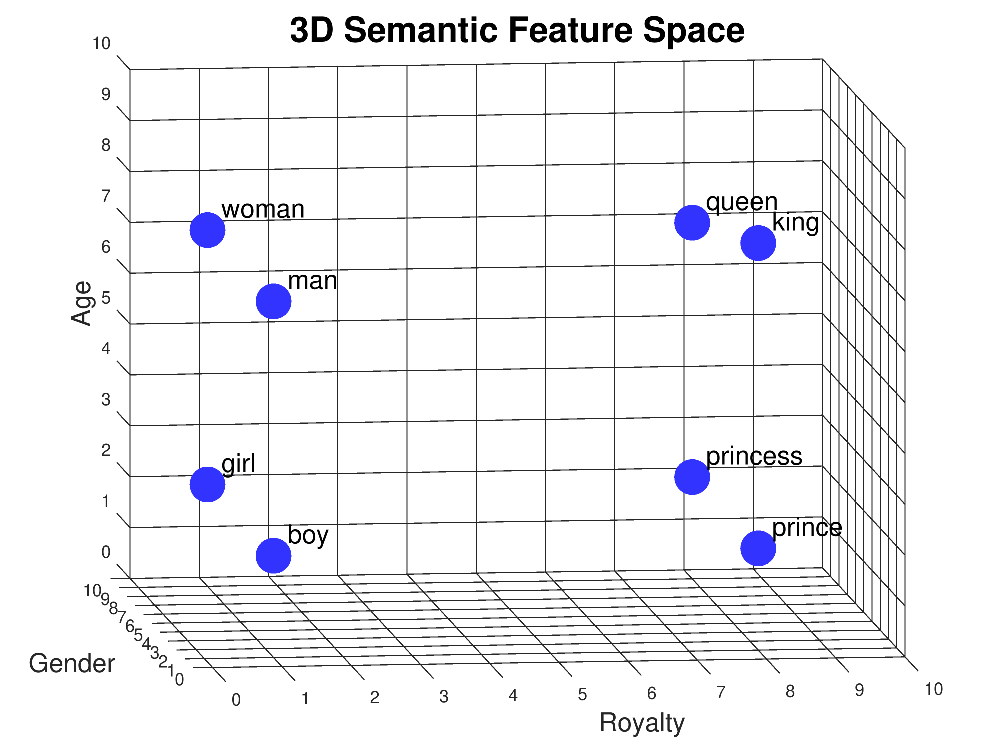
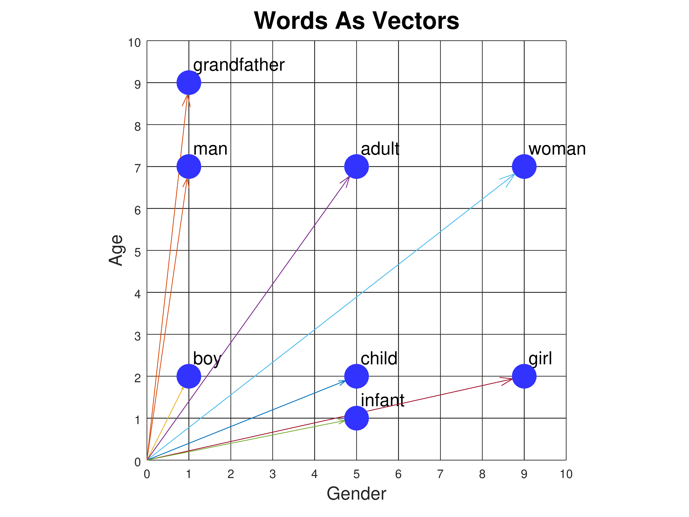
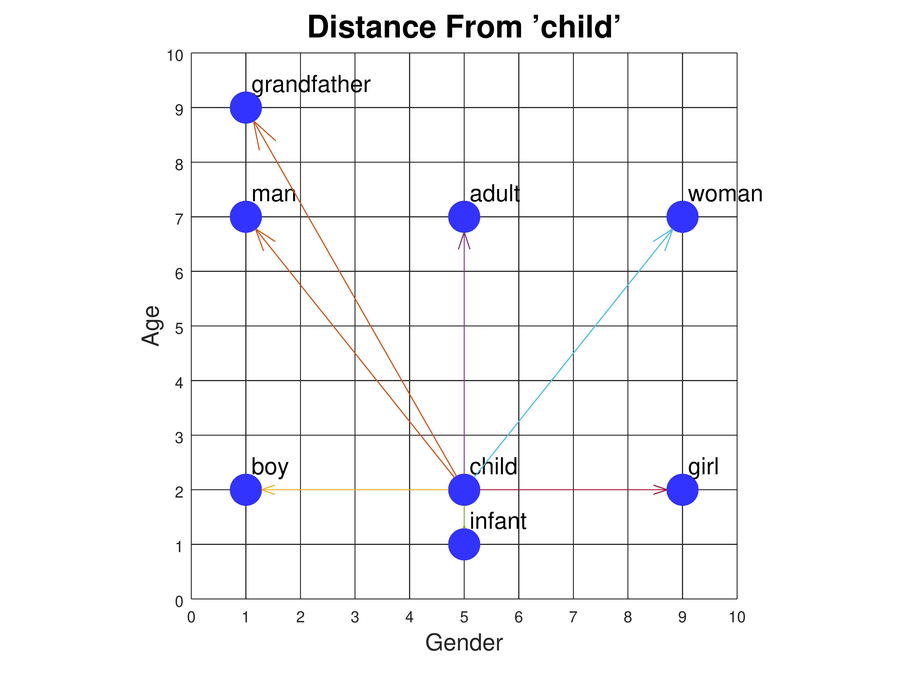
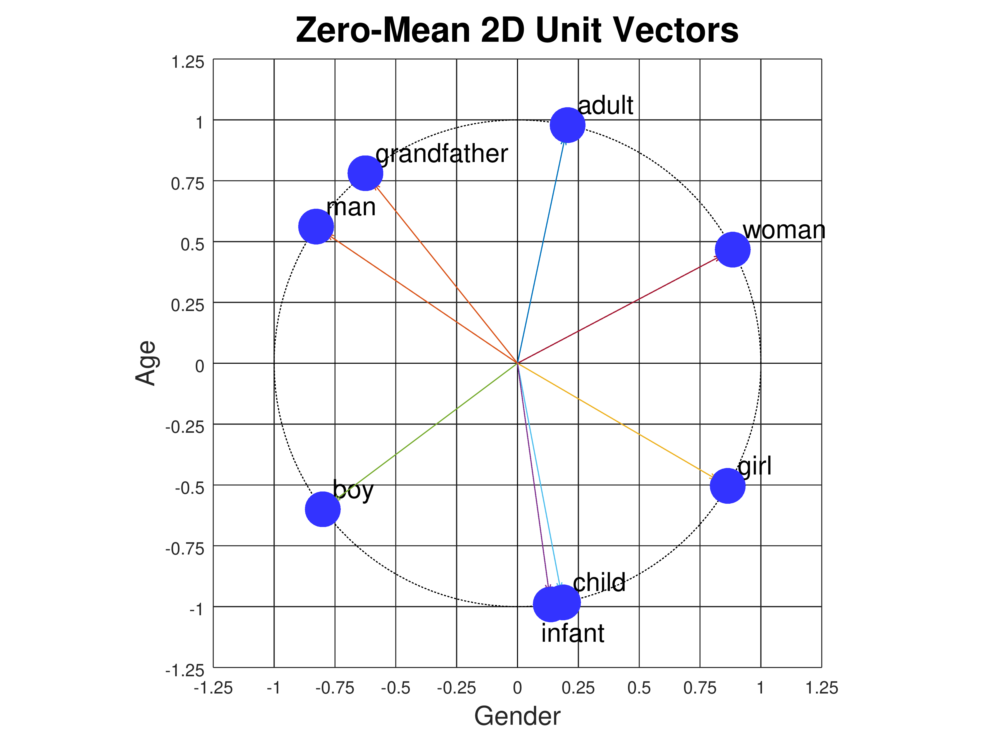
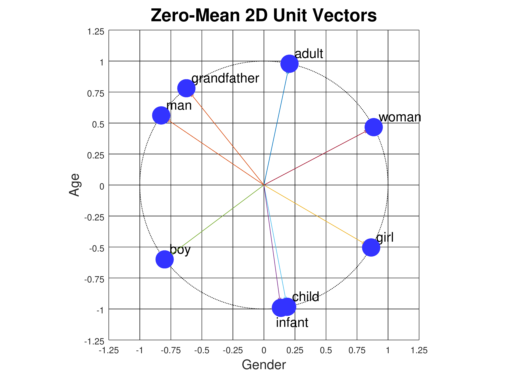

Word Embedding Demo: Tutorial
Navigation: Return to Demo or View Experiments
Semantic Feature Space
Consider the words "man", "woman", "boy", and "girl". Two of them
refer to males, and two to females. Also, two of them refer to
adults, and two to children. We can plot these worlds as points on
a graph where the x axis axis represents gender and
the y axis represents age:

Gender and age are called semantic features: they represent part of
the meaning of each word. If we associate a numerical scale with each feature,
then we can assign coordinates to each word:
| man | [ | 1, | 7 | ] |
| woman | [ | 9, | 7 | ] |
| boy | [ | 1, | 2 | ] |
| girl | [ | 9, | 2 | ] |
We can add new words to the plot based on their meanings. For
example, where should the words "adult" and "child" go? How about
"infant"? Or "grandfather"?

| man | [ | 1, | 7 | ] |
| woman | [ | 9, | 7 | ] |
| boy | [ | 1, | 2 | ] |
| girl | [ | 9, | 2 | ] |
| adult | [ | 5, | 7 | ] |
| child | [ | 5, | 2 | ] |
| infant | [ | 5, | 1 | ] |
| grandfather | [ | 1, | 9 | ] |
Exercise: how would you represent the words "grandmother",
"grandparent", "teenager", and "octogenarian"?
Now let's consider the words "king", "queen", "prince", and "princess". They
have the same gender and age attibutes as "man", "woman", "boy', and "girl". But
they don't mean the same thing. In order to distinguish "man" from "king",
"woman" from "queen", and so on, we need to introduce a new semantic feature
in which they differ. Let's call it "royalty". Now we have to plot the points
in a 3-dimensional space:

Each word has three coordinate values: age, gender, and royalty. We call
these lists of numbers vectors. Since they represent the values of
semantic features, we can also call them feature vectors.
| man | [ | 1, | 7, | 0 | ] |
| woman | [ | 9, | 7, | 0 | ] |
| boy | [ | 1, | 2, | 0 | ] |
| girl | [ | 9, | 2, | 0 | ] |
| king | [ | 1, | 8, | 8 | ] |
| queen | [ | 9, | 7, | 8 | ] |
| prince | [ | 1, | 2, | 8 | ] |
| princess | [ | 9, | 2, | 8 | ] |
Notice that we've assigned "king" a slightly higher age value (8) than
"queen" (7). Perhaps it's because we've read lots of stories about
very old kings (think King Lear), but not so many about very old
queens. Feature values don't have to be perfectly symmetrical.
Uses of Semantic Feature Vectors
What can we do with these numerical representations? One thing we can
use them for is judging similarity between words. For example, "boy"
is more similar to "girl" than to "queen" because the distance
from "boy" to "girl" is less than the distance from "boy" to "queen".
There are several ways to measure distance. One is to count the
number of features where the words differ. "Boy" and "girl" differ on
only one feature (gender), while "boy" and "queen" differ on all three
features (gender, age, and royalty). But this is a crude way to
measure similarity. A better way, since each word is represented by
coordinate values, is to compute the Euclidean distance between those
points, which can be done using the Pythagorean theorem. We won't go
into the details here, but if we take this approach, the distance
between "boy" and "girl" is 8, while the distance between "boy" and
"queen" comes out to 12.37.
Google's Semantris
game uses feature vector representations to determine which words are
related to which other words. But one of the most interesting things
we can do with feature vectors is solve word analogy problems.
Analogies By Vector Arithmetic
Analogies are constructed based on the relationships between words.
For example, "man is to king as woman is to _____". To arrive at the
answer we first find the relationship between man and king by
caculating "king" - "man". We do this by subtracting each coordinate
separately, giving (1 - 1) , (8 - 7), and (8 - 0), or [0, 1, 8]. Then
we add this to "woman", again treating each coordinate separately,
meaning (0 + 9), (1 + 7), (8 + 0) or [9, 8, 8]. Finally we find the
word closest to our result, which is "queen", or [9, 7, 8].
| king | [ | 1, | 8, | 8 | ] |
| man | [ | 1, | 7, | 0 | ] |
| king - man | [ | 0, | 1, | 8 | ] |
| woman | [ | 9, | 7, | 0 | ] |
| king - man + woman | [ | 9, | 8, | 8 | ] |
| queen | [ | 9, | 7, | 8 | ] |
We can also represent word analogies graphically. For the relationship
of "man" to "king" we draw an arrow from "man" to "king". Next we
copy this arrow, keeping the same direction and length, but now starting
from "woman". Then we see where the arrow points and look for the
closest word:

Word Embeddings
Going from two to three semantic features allowed us to represent more
words, but are three enough? How can we represent words such as
"cucumber", "smiled", or "honesty"? You could think up new semantic
features and move to a four or five or six dimensional space, but that
still wouldn't be enough. To represent the complexity of a typical
50,000 word English vocabulary requires hundreds of features.
Designing all those features by hand, and assigning accurate
coordinates to all those words, would be a lot of work!
Instead we can let the computer create the feature space for us by
supplying a machine learning algorithm with a large amount of text,
such as all of Wikipedia, or a huge collection of news articles. The
algorithm discovers statistical relationships between words by looking
at what other words they co-occur with. It uses this information to
create word representations in a semantic feature space of its own
design. These representations are called word embeddings. A
typical embedding might use a 300 dimensional space, so each word
would be represented by 300 numbers. The figure below shows the
embedding vectors for six words in our demo, which uses a
300-dimensional embedding. "Uncle", "boy", and "he" are male words,
while "aunt", "girl", and "she" are female words. Each word is
represented by 300 numbers with values between -0.2 and +0.2.
Component number 126 is shown magnified to the left. As you can see,
component 126 appears to correlate with gender: it has slightly
positive values (tan/orange) for the male words and slightly negative
values (blue/gray) for the female words.
 The most significant application of word embeddings is to encode words
for use as input to complex neural networks that try to understand
the meanings of entire sentences, or even paragraphs. One such class
of networks are called transformer neural networks. Two famous
transformer networks are BERT from Google, which now handles many
Google searches, and GPT3 from OpenAI.
The most significant application of word embeddings is to encode words
for use as input to complex neural networks that try to understand
the meanings of entire sentences, or even paragraphs. One such class
of networks are called transformer neural networks. Two famous
transformer networks are BERT from Google, which now handles many
Google searches, and GPT3 from OpenAI.
Measuring Euclidean Distance
Earlier we looked at ways to measure distance between two words.
Counting the number of features where they differ is too crude a
measure, because it doesn't distinguish between small value
differences and large ones. The alternative we settled on was
Euclidean distance. We will now explain the formula for calculating
this. But first we need to say a little more about vectors.
We've been drawing words as points in a semantic space, and we've also
referred to these points as vectors. In mathematics, a vector
is drawn as an arrow, and consists of a length and a direction. Words
can be drawn as arrows that begin at the origin and end at the point.
So the word "child" can be drawn as an arrow from the origin [0, 0] to
the point [5, 2]. Here are all the words in our 2D semantic space
drawn as vectors:

We can compare two words by drawing a vector from one to the other,
and measuring its length. The vector from "child" to "man" can be
computed by starting with "man" [1,7] and subtracting "child" [5,2],
giving the vector [-4, 5]. The length of a vector [x, y] is given by
the formula sqrt(x2 + y2), where sqrt is the
square root function. This is the Euclidean distance between the
words. Here are all the vectors from "child" to the other words:

And here are the Euclidean distances from "child":
| Distance from "child" |
| man | 6.4031 |
| woman | 6.4031 |
| boy | 4 |
| girl | 4 |
| adult | 5 |
| child | 0 |
| infant | 1 |
| grandfather | 8.0623 |
The same Euclidean distance formula works in higher dimensions too.
The length of a vector [x, y, z] is sqrt(x2 + y2
+ z2).
Euclidean distance is a perfectly reasonable distance measure, but
it's not the preferred distance measure for word embeddings. Instead
we use something called the dot product. It's actually a similarity
measure rather than a distance measure. Larger values mean words are
more similar.
Measuring Similarity With Dot Product
Given two vectors [x1, y1] and [x2,
y2], the Euclidean distance betwen them is
sqrt((x2-x1)2 +
(y2-y1)2). The dot product is
simpler: it's x1·x2 +
y1·y2.
The dot product is proportional to the cosine of the angle between the
two vectors. But in order for this to be a sensible measure of
similarity, we have to make a slight adjustment to the vectors first.
Consider the angles between the original vectors:
In the above diagram, the angle between "infant" (green vector) and
"girl" (orange vector) is almost zero, while the angle between
"infant" and "child" is larger. But clearly "infant" is closer to
"child" than to "girl". The problem is that all our vectors originate
at the origin. To correct the problem and make angle a useful measure
of similarity, we need the vectors to originate at the center of all
the points. So let's move the points so that their center is at the
origin. We can do this by taking the mean (average) of all the points
and subtracting that value from every point. This means that for
every feature, some words will have negative values while others have
positive values, so that their average is zero. Shifting the
coordinates this way has no effect on the Euclidean distance measure
because all points are shifted by an equal amount. But it
dramatically affects the dot product. The result looks like this:
 Now the angle between the "child" and "infant" vectors is nearly zero,
as it should be. But there is still an issue. The dot product of two
vectors is not exactly the cosine of the angle θ between them;
it's proportional to the cosine. Given two vectors u and v,
the exact value of dot(u,v) is
cos(&theta)·length(u)·length(v), where length(u) is the
length of the vector u, i.e., its Euclidean distance from the origin.
If we want the dot product to exactly equal the cosine, we need
to normalize the vectors so they have length 1. We do this by
dividing the coordinates of each vector by the length of the vector,
i.e., given a vector [x, y] with length r = sqrt(x2 +
y2), we can construct a unit vector pointing in the
same direct but with length 1 as [x/r, y/r].
Here is what the points look like when we convert them to unit vectors,
so they all lie on a circle of radius 1:

The dot product and Euclidean distance measures produce results that
are similar but not identical. For example, based on Euclidean
distance, "boy" is slightly closer to "child" than to "infant", but
looking at the unit vectors in the figure above, the angle between
"boy" and "infant" is slightly less than the angle between "boy" and
"child".
The word embeddings used in this demo, and by real AI systems, are
unit vectors with zero mean, just like the points above. The same
normalization technique applies to higher dimensional vectors, e.g.,
for three-dimensional semantic vectors, the points lie on the surface
of a unit sphere (a sphere with radius 1), as shown below:
Now the angle between the "child" and "infant" vectors is nearly zero,
as it should be. But there is still an issue. The dot product of two
vectors is not exactly the cosine of the angle θ between them;
it's proportional to the cosine. Given two vectors u and v,
the exact value of dot(u,v) is
cos(&theta)·length(u)·length(v), where length(u) is the
length of the vector u, i.e., its Euclidean distance from the origin.
If we want the dot product to exactly equal the cosine, we need
to normalize the vectors so they have length 1. We do this by
dividing the coordinates of each vector by the length of the vector,
i.e., given a vector [x, y] with length r = sqrt(x2 +
y2), we can construct a unit vector pointing in the
same direct but with length 1 as [x/r, y/r].
Here is what the points look like when we convert them to unit vectors,
so they all lie on a circle of radius 1:

The dot product and Euclidean distance measures produce results that
are similar but not identical. For example, based on Euclidean
distance, "boy" is slightly closer to "child" than to "infant", but
looking at the unit vectors in the figure above, the angle between
"boy" and "infant" is slightly less than the angle between "boy" and
"child".
The word embeddings used in this demo, and by real AI systems, are
unit vectors with zero mean, just like the points above. The same
normalization technique applies to higher dimensional vectors, e.g.,
for three-dimensional semantic vectors, the points lie on the surface
of a unit sphere (a sphere with radius 1), as shown below:
 Dot product is preferred to Euclidean distance for two reasons.
First, dot product requires fewer arithmetic operations. For
300-dimensional vectors, dot product requires 599 operations (300
multiplications plus 299 additions), while Euclidean distance requires
899 operations because it includes 300 subtractions. Second, the dot
product is exactly what a neuron in a neural net computes: it takes
the dot product of its weight vector with its input vector.
Dot product is preferred to Euclidean distance for two reasons.
First, dot product requires fewer arithmetic operations. For
300-dimensional vectors, dot product requires 599 operations (300
multiplications plus 299 additions), while Euclidean distance requires
899 operations because it includes 300 subtractions. Second, the dot
product is exactly what a neuron in a neural net computes: it takes
the dot product of its weight vector with its input vector.
How Word Embeddings Are Created
By magic.
Additional Resources
Navigation: Return to Demo or View Experiments